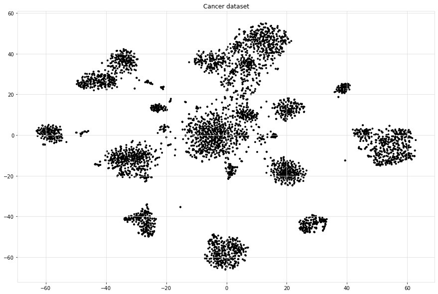
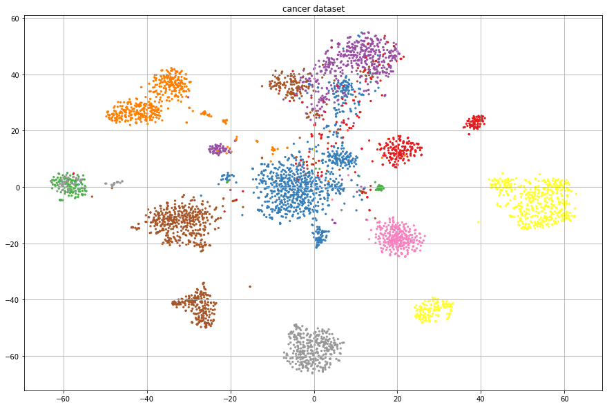
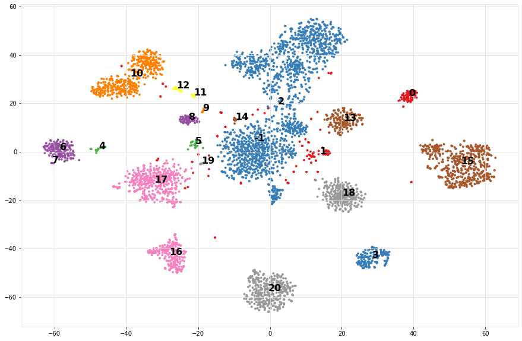
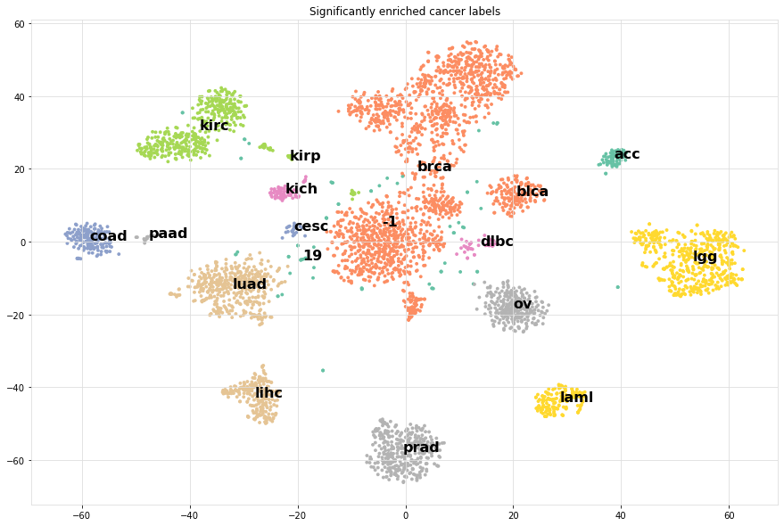

Examples
Lets load some datasets using hnet.import_example() and demonstrate the usage of hnet in learning Associations.
Sprinkler dataset
A natural way to study the relation between nodes in a network is to analyse the presence or absence of node-links. The sprinkler data set contains four nodes and therefore ideal to demonstrate the working of hnet in inferring a network. Links between two nodes of a network can either be undirected or directed (directed edges are indicated with arrows). Notably, a directed edge does imply directionality between the two nodes whereas undirected does not.
from hnet import hnet
hn = hnet()
# Import example dataset
df = hn.import_example('sprinkler')
# Learn the relationships
results = hn.association_learning(df)
# Generate the interactive graph
G = hn.d3graph()
Interactive network
Cluster enrichment
In case you have detected cluster labels and now you want to know whether there is association between any of the clusters with a (group of) feature(s). In this example, I will load an cancer data set with pre-computed t-SNE coordinates based on genomic profiles. The t-SNE coordinates I will cluster, and the detected labels are used to determine any assocation with the metadata.
# For cluster evaluation
pip install sklearn
# For easy plotting
pip install scatterd
Cancer dataset
# Import
import hnet
# Import example dataset
df = hnet.import_example('cancer')
# Print
print(df.head())
tsneX |
tsneY |
age |
sex |
survival_months |
death_indicator |
labx |
PC1 |
PC2 |
|
|---|---|---|---|---|---|---|---|---|---|
0 |
37.2043 |
24.1628 |
58 |
male |
44.5175 |
0 |
acc |
49.2335 |
14.4965 |
1 |
37.0931 |
23.4236 |
44 |
female |
55.0965 |
0 |
acc |
46.328 |
14.4645 |
2 |
36.8063 |
23.4449 |
23 |
female |
63.8029 |
1 |
acc |
46.5679 |
13.4801 |
3 |
38.0679 |
24.4118 |
30 |
male |
11.9918 |
0 |
acc |
63.6247 |
1.87406 |
4 |
36.7912 |
21.7153 |
29 |
female |
79.77 |
1 |
acc |
41.7467 |
37.5336 |
tSNE scatterplot
For demonstration purposes, we make a scatter plot with the True cancer labels to show that cancer labels are associated with the clusters. In many use-cases, your scatterplot would not be colored because you do not know yet which variables fit best the cluster labels.
# Import
from scatterd import scatterd
# Make scatter plot
scatterd(df['tsneX'],df['tsneY'], label=df['labx'], cmap='Set2', fontcolor=[0,0,0], title='Cancer dataset with True labels')
# Make scatter plot wihtout colors
scatterd(df['tsneX'],df['tsneY'], title='Cancer dataset.')
 |
 |
Compute associations
Step 1 is to compute the cluster labels based on the tSNE coordinates. We readily have these coordinates computed and can be extracted from the dataframe. Step 2 is to compute the enrichment of the variables (meta-data) with the cluster labels.
# Import
import sklearn
# Determine cluster labels
dbscan = sklearn.cluster.DBSCAN(eps=2)
labx = dbscan.fit_predict(df[['tsneX','tsneY']])
print('Number of detected clusters: %d' %(len(np.unique(labx))))
# Number of detected clusters: 22
# Import
import hnet
# Enrichment of clusterlabels with the meta-data
# results = hnet.enrichment(df[['age', 'sex', 'survival_months', 'death_indicator','labx']], labx)
# [hnet] >Start making fit..
# [df2onehot] >Auto detecting dtypes
# [df2onehot] >[age] > [float] > [num] [74]
# [df2onehot] >[sex] > [obj] > [cat] [2]
# [df2onehot] >[survival_months] > [force] > [num] [1591]
# [df2onehot] >[death_indicator] > [float] > [num] [2]
# [df2onehot] >[labx] > [obj] > [cat] [19]
# [df2onehot] >
# [df2onehot] >Setting dtypes in dataframe
# [hnet] >Analyzing [num] age......................
# [hnet] >Analyzing [cat] sex......................
# [hnet] >Analyzing [num] survival_months......................
# [hnet] >Analyzing [num] death_indicator......................
# [hnet] >Analyzing [cat] labx......................
# [hnet] >Multiple test correction using holm
# [hnet] >Fin
# For demonstration purposes I will only do the true cancer label column.
results = hnet.enrichment(df[['labx']], labx)
# Examine the results
print(results)
Cluster associations with categories
When we look at the results (table below), we see in the first column the category_label. These are the metadata variables of the dataframe df that we gave as an input. The second columns: P stands for P-value, which is the computed significance of the catagory_label with the target variable y. In this case, target variable y are are the cluster labels labx. A disadvantage of the P value is the limitation of machine precision. This may end up with P-value of 0. The logP is more interesting as these are not capped by machine precision (lower is better). Note that the target labels in y can be significantly enriched more then once. This means that certain y are enriched for multiple variables. This may occur because we may need to better estimate the cluster labels or its a mixed group or something else.
category_label |
P |
logP |
overlap_X |
popsize_M |
nr_succes_pop_n |
samplesize_N |
dtype |
y |
category_name |
Padj |
|
|---|---|---|---|---|---|---|---|---|---|---|---|
0 |
acc |
1.27018e-153 |
-352.056 |
71 |
4674 |
77 |
72 |
categorical |
0 |
labx |
5.15692e-151 |
1 |
dlbc |
3.22319e-51 |
-116.261 |
24 |
4674 |
27 |
48 |
categorical |
1 |
labx |
1.29572e-48 |
2 |
kirc |
4.73559e-219 |
-502.711 |
218 |
4674 |
259 |
398 |
categorical |
10 |
labx |
1.94633e-216 |
3 |
kirp |
2.12553e-166 |
-381.475 |
177 |
4674 |
219 |
398 |
categorical |
10 |
labx |
8.65091e-164 |
4 |
kirc |
8.16897e-20 |
-43.9514 |
15 |
4674 |
259 |
17 |
categorical |
11 |
labx |
3.24308e-17 |
5 |
kirp |
1.26634e-20 |
-45.8156 |
18 |
4674 |
219 |
26 |
categorical |
12 |
labx |
5.04005e-18 |
6 |
blca |
5.65247e-217 |
-497.929 |
157 |
4674 |
265 |
161 |
categorical |
13 |
labx |
2.31751e-214 |
7 |
kirp |
4.18004e-14 |
-30.8059 |
9 |
4674 |
219 |
10 |
categorical |
14 |
labx |
1.6553e-11 |
8 |
lgg |
0 |
-1571.11 |
500 |
4674 |
504 |
501 |
categorical |
15 |
labx |
0 |
9 |
lihc |
0 |
-841.979 |
220 |
4674 |
231 |
222 |
categorical |
16 |
labx |
0 |
10 |
luad |
0 |
-1172.91 |
397 |
4674 |
427 |
419 |
categorical |
17 |
labx |
0 |
11 |
ov |
0 |
-963.047 |
256 |
4674 |
262 |
258 |
categorical |
18 |
labx |
0 |
12 |
brca |
0 |
-846.29 |
745 |
4674 |
761 |
1653 |
categorical |
2 |
labx |
0 |
13 |
cesc |
1.49892e-49 |
-112.422 |
172 |
4674 |
205 |
1653 |
categorical |
2 |
labx |
5.99569e-47 |
14 |
hnsc |
1.9156e-212 |
-487.498 |
463 |
4674 |
474 |
1653 |
categorical |
2 |
labx |
7.83481e-210 |
15 |
lusc |
6.20884e-51 |
-115.606 |
159 |
4674 |
182 |
1653 |
categorical |
2 |
labx |
2.48975e-48 |
16 |
prad |
0 |
-1241.55 |
356 |
4674 |
360 |
357 |
categorical |
20 |
labx |
0 |
17 |
laml |
4.39155e-312 |
-716.927 |
166 |
4674 |
167 |
167 |
categorical |
3 |
labx |
1.80932e-309 |
18 |
paad |
2.14906e-54 |
-123.575 |
19 |
4674 |
20 |
21 |
categorical |
4 |
labx |
8.6822e-52 |
19 |
cesc |
1.11451e-28 |
-64.364 |
21 |
4674 |
205 |
24 |
categorical |
5 |
labx |
4.44688e-26 |
20 |
coad |
1.16815e-193 |
-444.244 |
122 |
4674 |
134 |
161 |
categorical |
6 |
labx |
4.76605e-191 |
21 |
read |
4.83245e-52 |
-118.159 |
33 |
4674 |
34 |
161 |
categorical |
6 |
labx |
1.94748e-49 |
22 |
coad |
3.71058e-13 |
-28.6224 |
7 |
4674 |
134 |
8 |
categorical |
7 |
labx |
1.46568e-10 |
23 |
kich |
5.97831e-124 |
-283.732 |
59 |
4674 |
66 |
65 |
categorical |
8 |
labx |
2.42122e-121 |
24 |
kich |
1.2301e-06 |
-13.6084 |
3 |
4674 |
66 |
7 |
categorical |
9 |
labx |
0.00048466 |
Color on significantly associated catagories
Lets compute for each cluster label y, the most significantly enriched category label.
from scatterd import scatterd
# Import
out = results.loc[results.groupby(by='y')['logP'].idxmin()]
enriched_label = pd.DataFrame(labx.astype(str))
for i in range(out.shape[0]):
enriched_label = enriched_label.replace(out['y'].iloc[i], out['category_label'].iloc[i])
# Scatterplot of the cluster numbers
scatterd(df['tsneX'],df['tsneY'], label=labx, fontcolor=[0,0,0])
# Scatterplot of the significantly enriched cancer labels
scatterd(df['tsneX'],df['tsneY'], label=enriched_label.values.ravel(), fontcolor=[0,0,0], cmap='Set2', title='Significantly enriched cancer labels')
 |
 |
It can bee seen that the most significantly enriched cancer labels for the clusters do represent the true labels very well.